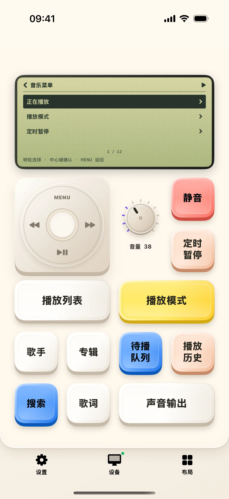
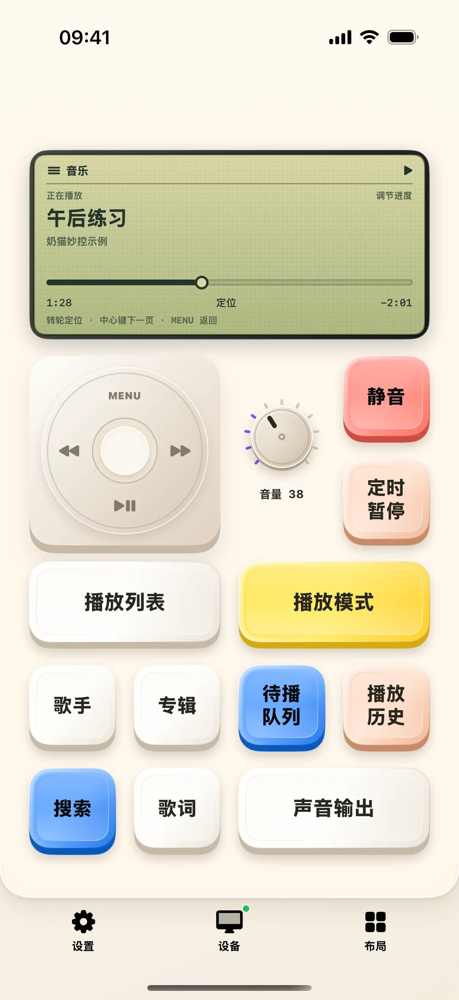

先让 Mac 播放一首音乐，再在手机上练习暂停、进入菜单和调整进度。本文以音乐 App 的能力为例；如果你用 Spotify 或其他播放器，菜单项目可能少一些。
开始前准备
- iPhone / iPad 安装奶猫妙控 1.2.0，Mac 安装同版本配套端；完成配对，并允许 Mac 端的辅助功能权限。需要电脑画面时，再开启屏幕录制权限。
- 在 Mac 的“音乐”App 中手动播放一首你有权播放的歌曲。检查手机是否显示对应曲名；本文截图的“午后练习”是虚构演示条目，不是需要搜索的真实曲目。
1. 打开媒体，核对曲名
在 App 底部点“布局”，在列表中找到“媒体”。布局较多时用搜索框搜索名称；有多个桌面的方案先点右侧箭头展开，再点桌面名称；搜索具体桌面名称也能找到它。
先看小屏上的歌曲名、播放状态和进度是否来自当前播放器，再按播放/暂停键。检查 Mac 声音是否暂停；再按一次恢复。曲名不一致时先处理播放器来源，不要急着调整进度。

2. 按 MENU 打开小屏菜单
点击轮上方的 MENU 会把小屏切换为菜单。你可以直接点菜单行，也可以沿点击轮滑动改变选中项，再按中心确认键进入。
先找到“正在播放”。在其他菜单页面中，MENU 用来返回上一级；回到“正在播放”后可继续看歌曲信息。

3. 进入播放模式，认识状态回读
点“播放模式”，检查是否出现随机播放、循环等选项。选择一个选项后，在 Mac 播放器里核对对应状态，再看手机是否同步更新。
音乐 App 与 Spotify 提供的能力不完全相同；例如是否能喜欢歌曲，要以当前界面是否提供该选项为准。本文只展示已打开的设置页，不把演示数据当作播放器已切换状态。
4. 回到歌曲页，进入进度调节
返回“正在播放”，点中心确认键，看到“调节进度”后再沿点击轮滑动。先小幅调整，观察进度数字，再检查 Mac 实际播放位置。
中心键还会在不同歌曲信息页面间切换。如果当前看到的是封面或歌曲信息，先确认页面标题，不要把所有转轮操作都当成调节音量。

5. 回到日常使用，并处理缺失菜单
练习结束后回到“正在播放”，保留你需要的播放模式。播放列表、歌词、声音输出等入口只在播放器返回相应能力时有意义。
若某项显示暂不可用，先在 Mac 内完成同一操作，确认播放器本身提供它。普通播放器能够接收播放控制，并不意味着一定能提供歌词、收藏或完整资料库。
操作不符合预期时
手机有播放按钮，却没有曲名？
先在 Mac 播放一首歌，再检查媒体来源和连接。普通媒体控制与曲目信息读取是不同能力，不保证同时可用。
歌词或播放列表为空怎么办？
不要用重复点击推断已经读取成功。先核对播放器支持情况与歌曲信息；歌词无匹配时可稍后重试，资料库为空时在 Mac 检查内容。
本文按奶猫妙控 1.2.0 的界面与操作编写，更新于 2026 年 9 月 10 日。查看更新日志 · 连接与权限帮助。